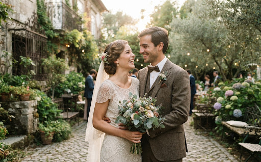

«As fotografias do nosso casamento são o nosso maior tesouro.»

Quinta da Gricha
•
Douro

Fotógrafo de casamentos e paisagens, no Porto.

Comecei a fotografar aos 15 anos, com a máquina do meu avô.
Hoje fotografo pessoas e lugares com uma DSLR, sempre com luz natural.

Alguns dos momentos mais marcantes do meu percurso fotográfico:
| Ano | Exposição / Distinção | Galeria / Organização | Cidade |
|---|---|---|---|
| 2025 | Exposição Individual "Luzes do Douro" | Galeria Municipal | Porto |
| 2024 | Menção Honrosa em Fotografia de Paisagem | Festival de Fotografia do Norte | Braga |
| 2022 | Exposição Coletiva "Gentes do Norte" | Centro Cultural Regional | Guimarães |
«As fotografias do nosso casamento são o nosso maior tesouro.»

Têm dúvidas sobre as datas disponíveis? Enviem um e-mail para rui.costa@exemplo.pt ou peçam um orçamento através da Página de Contactos.